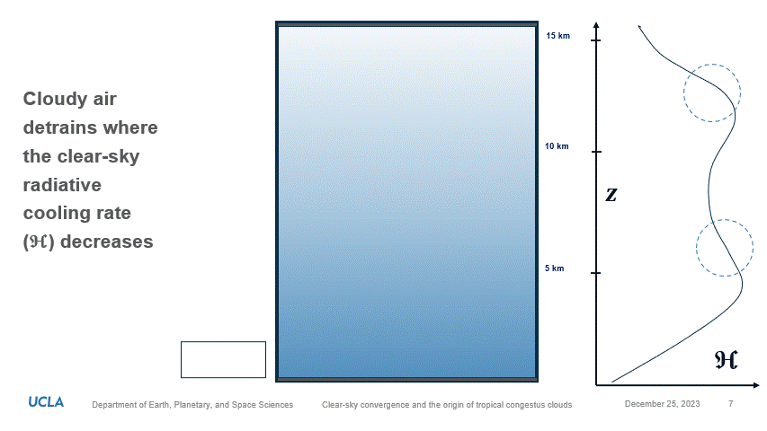

The origin of tropical congestus clouds
Cumulus, congestus, and cumulonimbus clouds are distinct cloud types, each playing a role in the Earth's atmospheric processes and contributing to different weather phenomena. These clouds are categorized based on their appearance, altitude, and the atmospheric conditions associated with them. In this image, we see a convective system consisting of shallow cumulus and a precipitating congestus tower (center).
Cumulus Clouds
Cumulus clouds are perhaps the most recognizable among the three. They are generally white, puffy clouds with a flat base. Cumulus clouds form when warm air rises and cools, causing water vapor to condense into droplets. While cumulus clouds are typically benign and indicate fair weather, they can develop into more significant cloud types under certain conditions.
Congestus Clouds
Congestus clouds are an intermediate stage between cumulus and cumulonimbus clouds. These clouds appear larger and taller than typical cumulus clouds and often have a well-defined vertical development. Congestus clouds indicate rising air currents and increasing atmospheric instability. While they are still generally associated with fair weather, their towering appearance suggests a potential for further development into more intense cloud formations.
Cumulonimbus Clouds
Cumulonimbus clouds are the most dramatic and powerful of the three types. These towering clouds can reach the stratosphere and are associated with thunderstorms, heavy rainfall, lightning, and gusty winds. Cumulonimbus clouds have a characteristic anvil-shaped top caused by the spreading of the cloud at the tropopause. These clouds are capable of producing severe weather due to strong updrafts and the potential for organized convection.
Convection is an "elevator" for cloudy air
Convection acts as an "elevator" for cloudy air by facilitating the vertical movement of air masses within the Earth's atmosphere. When the sun heats the Earth's surface, the air in contact with the warm ground becomes warmer and less dense. As this warm air rises, it cools adiabatically, and if it reaches its dew point, water vapor within it condenses to form clouds. This rising motion of air, driven by temperature and density differences, is known as convection. Essentially, convection serves as an atmospheric elevator, lifting moist air parcels to higher altitudes where the cooling and condensation processes occur, leading to the formation of clouds. This vertical transport of air is crucial for the redistribution of heat and moisture throughout the atmosphere, playing a fundamental role in weather patterns and the development of shallow cumulus, intermediate congestus, and deep cumulonimbus.
The relationship between cloud area, radiative impact, and cloud spreading is integral to understanding the influence of clouds on Earth's energy balance. Cloud area refers to the spatial coverage of clouds in a given region, impacting the amount of solar radiation reaching the Earth's surface and the longwave radiation escaping back into space. The radiative impact of clouds involves their ability to reflect incoming solar radiation (albedo effect) and trap outgoing terrestrial radiation (greenhouse effect). Cloud spreading, or the horizontal extent of clouds, plays a crucial role in determining the overall radiative impact. In a recently submitted paper, we show that congestus clouds form at 5-6 km altitude due to cloud spreading associated with air "exiting" - that is, detraining - from convective elevators. Cloudy air preferentially detrains from the convective elevator at 5-6 km due to vertical gradients in the clear-sky cooling rate. The simplest explanation for this is that atmospheric cooling gradients act as a "vacuum" for cloudy air, which must be supplied by the elevators.
The importance of congestus clouds
 Congestus clouds are a topic of considerable interest to the scientific community.
They supply 25-40% of total tropical precipitation, and therefore have an important hydrological
as well as economic impact (on, e.g., agriculture and financial assets). Unfortunately, most re-analysis models severely under-estimate their
abundance, which are well known from satellite observations. These models are widely used by researchers
in academia and industry (e.g., insurance and finance) to quantify climate risk. Clouds remain the largest
source of uncertainty in predicting future climate change. The tropics are an ideal laboratory for testing
ideas about cloud formation, especially mid-level congestus, which are understudied
compared to the cumulus and cumulonimbus populations due to . Recently, I had the pleasure of giving a talk
about the origin of congestus clouds at the 2023 AGU Fall Meeting in San Francisco.
Congestus clouds are a topic of considerable interest to the scientific community.
They supply 25-40% of total tropical precipitation, and therefore have an important hydrological
as well as economic impact (on, e.g., agriculture and financial assets). Unfortunately, most re-analysis models severely under-estimate their
abundance, which are well known from satellite observations. These models are widely used by researchers
in academia and industry (e.g., insurance and finance) to quantify climate risk. Clouds remain the largest
source of uncertainty in predicting future climate change. The tropics are an ideal laboratory for testing
ideas about cloud formation, especially mid-level congestus, which are understudied
compared to the cumulus and cumulonimbus populations due to . Recently, I had the pleasure of giving a talk
about the origin of congestus clouds at the 2023 AGU Fall Meeting in San Francisco.
A pre-print of the study is available to read here.